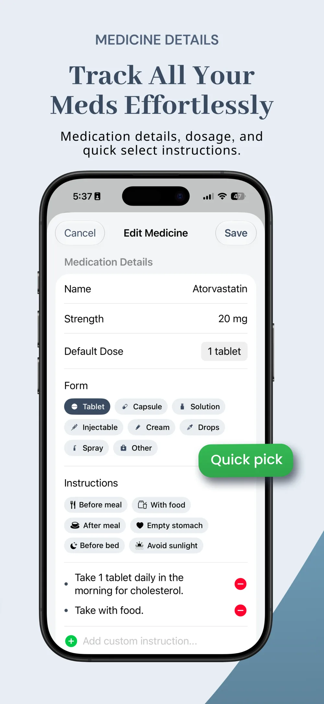

Best Time of Day to Take Vitamin D3 with Food: Morning or Night?
Vitamin D3 (cholecalciferol) is one of the most widely used dietary supplements, playing an important role in calcium absorption and bone health (NIH Office of Dietary Supplements). For adults, the Recommended Dietary Allowance (RDA) is 600 to 800 IU per day, and the tolerable upper limit is 4,000 IU per day unless a doctor advises a higher dose.
Because vitamin D is fat-soluble, whether you take it with food or on an empty stomach can influence absorption. Choosing a consistent mealtime, such as breakfast or lunch, also makes daily dosing much easier to stick with over time.
| Timing & Meal Condition | Absorption & Practicality | What We Know | Recommended Pairing |
|---|---|---|---|
| Morning with Breakfast (With Fat) | Practical & Well Absorbed | Dietary fat supports absorption of fat-soluble vitamin D | Eggs, avocado, yogurt, or a drizzle of olive oil |
| Midday with Your Largest Meal | May Support Higher Levels | A small cohort study saw higher 25(OH)D when taken with the largest meal (Mulligan & Licata, 2010) | Good option for people who skip breakfast |
| Late Evening / Bedtime | Depends on the Person | Some people report lighter sleep with late doses, though research is limited | Take earlier if sleep feels affected; consider evening magnesium glycinate separately |
| Fasted (Empty Stomach) | May Be Less Well Absorbed | Fat-soluble vitamins absorb better alongside food containing fat | Wait until your first meal of the day |
1. Why Taking Vitamin D3 with a Meal Matters
According to the NIH Office of Dietary Supplements, vitamin D is fat-soluble, meaning it absorbs best when taken with food that contains some fat. Unlike water-soluble vitamins (such as vitamin C and B vitamins), fat-soluble vitamins rely on dietary lipids during digestion.
In a small, uncontrolled study of 17 patients, Mulligan and Licata (2010) found that taking vitamin D with the largest meal of the day raised blood 25-hydroxyvitamin D [25(OH)D] levels by about 50% over 2 to 3 months. Because that study was small and uncontrolled, more research is needed on the exact size of the effect, but taking vitamin D3 with a regular meal is an easy habit to keep:
- Pair with Everyday Foods: Whole foods like eggs, avocado, nuts, yogurt, or a tablespoon of olive oil add dietary fat without needing a heavy or greasy meal.
- Intermittent Fasting Tip: If you practice intermittent fasting and skip breakfast, wait to take your vitamin D3 until your first meal rather than taking it with black coffee on an empty stomach.
2. Morning vs. Night: Does Vitamin D Affect Sleep?
Because our bodies naturally produce vitamin D when skin is exposed to midday sunlight, many people prefer taking vitamin D3 in the morning or at lunch rather than right before bed. Anecdotally, some people notice that taking vitamin D late at night leaves them feeling more alert or bothers their sleep, although research on whether vitamin D timing affects melatonin or sleep quality is limited and inconclusive.
If you notice restless sleep after taking vitamin D3 in the evening, shifting your dose to breakfast or lunch is a simple adjustment. Also keep total daily intake within safe limits: the NIH ODS sets the adult upper limit at 4,000 IU per day unless a doctor monitors a higher dose.
Built into Supplement & Pill Reminder
Organize your full vitamin stack with custom notes
Add instructions like 'Take with fat-containing meal' directly to your vitamin cards on iOS.
Track Your Vitamin D3+K2 Stack Free →
3. Vitamin D3 and Vitamin K2: How They Fit Together
Vitamin D3 and vitamin K (often K2 as MK-7) are frequently combined in supplements because both nutrients play roles in bone health. While vitamin D helps your body absorb calcium, vitamin K supports normal blood clotting and bone protein function (NIH ODS).
Research on whether healthy adults need extra K2 alongside typical vitamin D3 doses is still evolving, so talk to a doctor before adding high-dose combinations. Important safety warning: Vitamin K plays a direct role in blood clotting and interacts with blood thinners such as warfarin. If you take warfarin or any anticoagulant medication, you must talk to your doctor before taking any supplement containing vitamin K (NIH ODS).
4. Magnesium and Routine Consistency
Magnesium is also involved in how the body metabolizes vitamin D. Many people take vitamin D3 with a meal earlier in the day and magnesium glycinate in the evening as part of a steady daily schedule. Staying consistent with your daily dose, and checking your blood levels with a doctor rather than guessing high doses, is the safest approach.
Sources
- NIH Office of Dietary Supplements, "Vitamin D: Fact Sheet for Health Professionals" (NIH ODS).
- Mulligan GB, Licata A, "Taking vitamin D with the largest meal improves absorption and results in higher serum levels of 25-hydroxyvitamin D," J Bone Miner Res, 2010 (PubMed).
- NIH Office of Dietary Supplements, "Vitamin K: Fact Sheet for Health Professionals" (NIH ODS).
Organize your full vitamin stack with custom notes
Add instructions like 'Take with fat-containing meal' directly to your vitamin cards on iOS.
Download Pill Reminder on the App Store →Frequently Asked Questions
What is the best time of day to take vitamin D3 with food?
For most people, morning or lunchtime with a meal containing some dietary fat (such as eggs, avocado, nuts, or olive oil) is a practical choice. Vitamin D is fat-soluble, so taking it with food helps your body absorb it.
Is it OK to take vitamin D3 at night or before bed?
Taking vitamin D3 at night is generally fine, though some people prefer taking it with breakfast or lunch because they feel evening doses bother their sleep. Research on vitamin D timing and melatonin or sleep is limited, so if bedtime dosing seems to affect your rest, try moving it earlier in the day.
Why should you take vitamin D with dietary fat?
Vitamin D is a fat-soluble vitamin, so dietary fat in a meal helps your digestive tract absorb it. In a small, uncontrolled study of 17 patients, taking vitamin D with the largest meal of the day was associated with higher blood 25(OH)D levels over 2 to 3 months compared with taking it without a full meal.
Should vitamin D3 be paired with vitamin K2?
Vitamin D3 does not strictly require a vitamin K2 supplement for everyone, though they are often paired because vitamin D aids calcium absorption while vitamin K supports normal blood clotting and bone protein function. Always talk to your doctor before taking vitamin K if you use warfarin or another blood thinner.
Does taking vitamin D3 at night cause insomnia?
Research is limited and inconclusive on whether vitamin D3 directly causes insomnia or affects melatonin. Some people anecdotally notice lighter sleep when taking it close to bedtime; if that happens to you, taking your dose with breakfast or lunch is an easy fix.